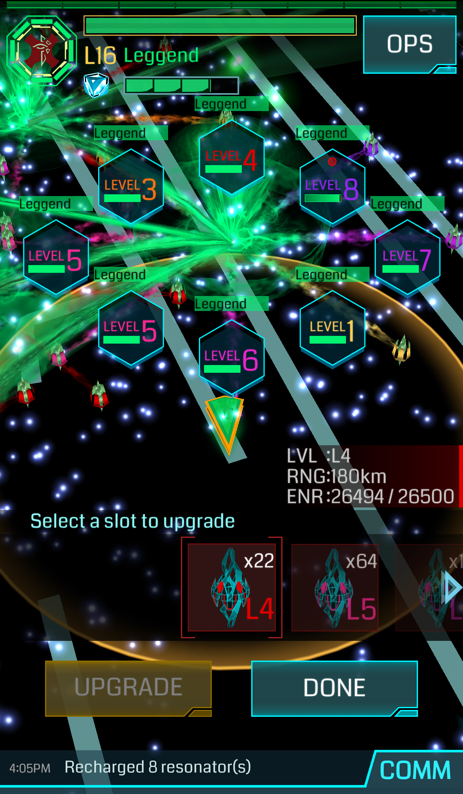

Ingress Level UP
"The world around you is not what it seems"
"The world around you is not what it seems"

I Portali sono l'elemento su cui si basa tutto il gioco; possono essere di 3 colori: verde ( Enlightened) , blu ( Resistance) o grigio (neutro ). Perché un portale sia “in salute” e più resistente agli attacchi nemici è sempre bene utilizzare dei mod da difesa (ne parleremo più avanti) e tenere i risonatori sempre al massimo livello di carica. Le azioni che si possono compiere su di un portale possono essere diverse.

Azione che permette di ottenere oggetti. Un hack su un portale della fazione avversaria comporta +100AP ma meno oggetti. Ogni hack comporta un consumo di XM, secondo la formula Portal Level * 50 XM. Sappiate che potete anche fare il gioco dei glifi per avere più items. Trovate la spiegazione qui E’ interessante anche sapere come estendere il numero di hack sui portali e diminuire il tempo tra un hack e l’altro, e qui introduciamo il termine FARM (dall’inglese to farm che utilizziamo per indicare l’acquisizione di un grande numero di oggetti tramite l’azione di HACK)
N.B. il deploy dei risonatori su un portale va effettuato nel massimo range possibile, quindi posizionandosi col portale a filo del cerchio arancione.
Puoi collegare due portali tra loro. Tre portali collegati tra loro a formare un triangolo creano un Control Field. Lo spazio occupato dal field è assegnato alla fazione del giocatore, che viene premiata con un numero di MU (Mind Units) dipendente dalla densità di popolazione e dalla dimensione del field.
Ogni link aumenta la difesa di un portale in termini di mitigazione (difesa) dell’attacco avversario.
Un portale, di base, supporta massimo 8 link in uscita e infiniti link in entrata.